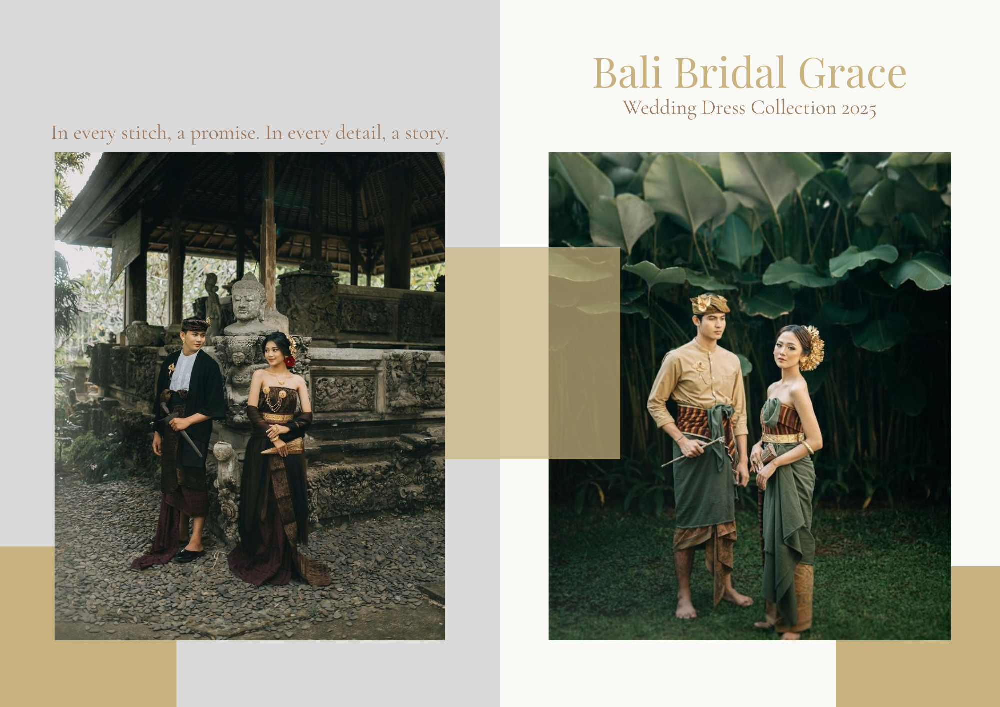
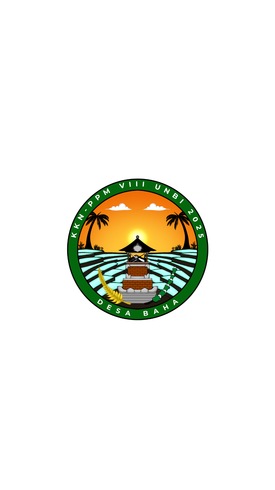
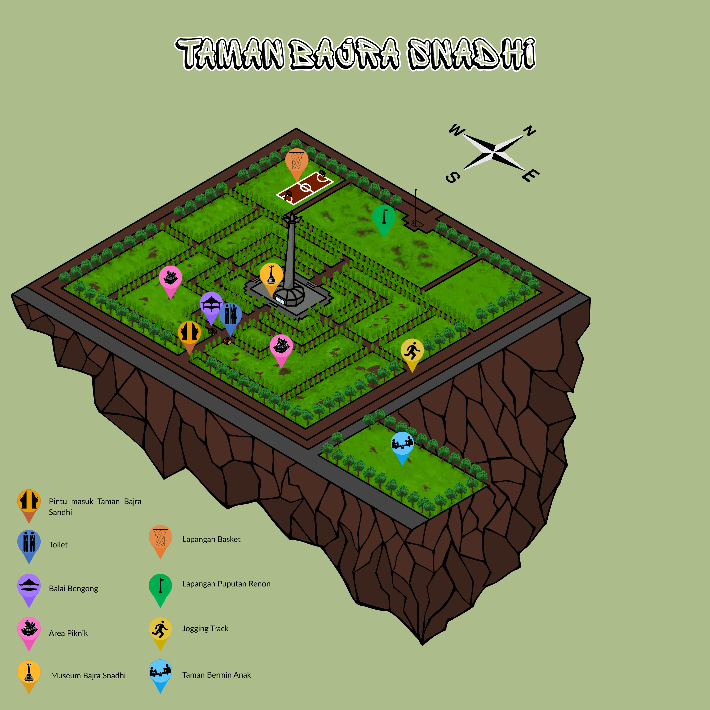
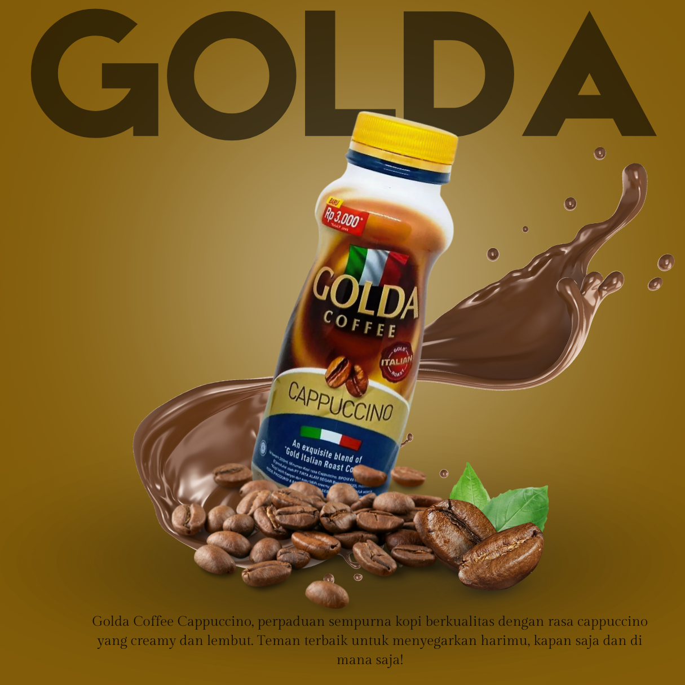
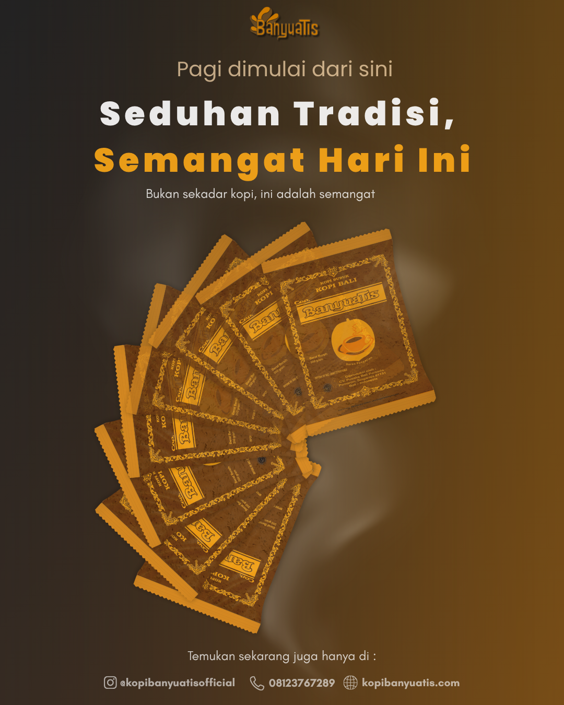

Other Projects
Berikut merupakan beberapa project lain yang pernah saya kerjakan selama perkuliahan maupun latihan mandiri.
Berikut merupakan beberapa project lain yang pernah saya kerjakan selama perkuliahan maupun latihan mandiri.

Perancangan katalog visual untuk koleksi pernikahan dengan penekanan pada estetika, layout, dan storytelling visual.

Perancangan katalog visual untuk koleksi pernikahan dengan penekanan pada estetika, layout, dan storytelling visual.

Perancangan identitas visual Logo KKN Desa Baha UNBI 2025 yang mengangkat nilai budaya, kearifan lokal, dan semangat kolaborasi masyarakat.

Infografis peta berbasis ilustrasi isometrik yang menampilkan tata ruang dan fasilitas Taman Bajra Sandhi secara informatif.

Poster promosi produk minuman Golda dengan pendekatan visual komersial yang modern dan menarik.

Poster kampanye dengan konsep tradisional yang dipadukan sentuhan visual modern untuk menyampaikan pesan secara efektif.